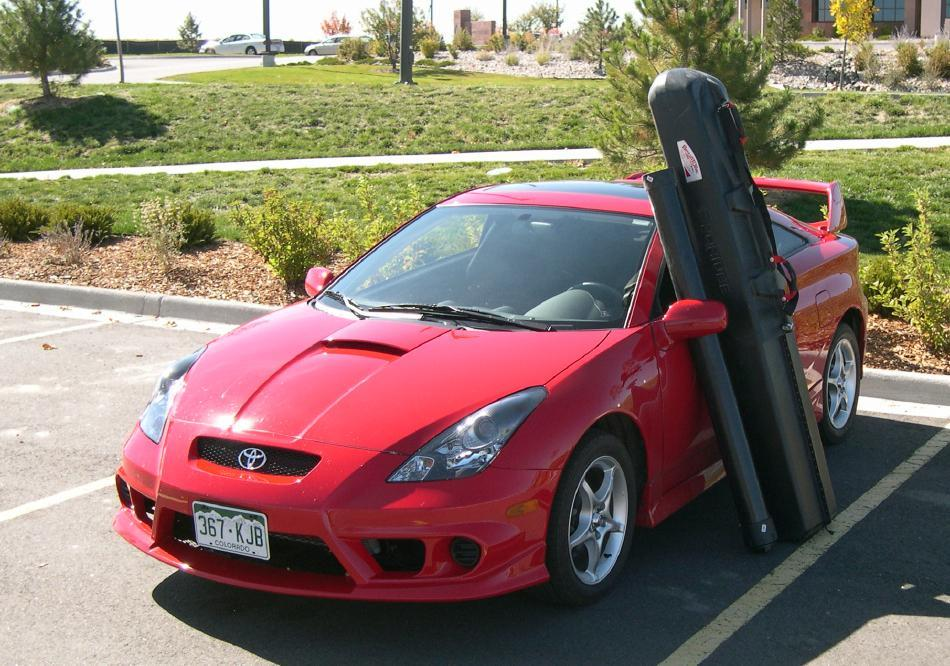

Transport ( 5 of 6)
Menu
Previous Page
Next Page

For long distance travel, or local transport with a small car, a folder can be carried inside. Pictured are the "Sea Rider" in it's snowboard hard case, and an ABS take-apart paddle case.